Reference-based image stylization aims to transfer the artistic style of a reference image onto user-specified content. Prevailing diffusion-based approaches rely on feature injection, extracting style representations from a reference and incorporating them into the denoising process. However, these methods suffer from an inherent content leakage problem arising from two coupled factors: (1) style and content information are entangled within the injected features, and (2) injecting these features across the denoising trajectory inevitably interferes with content generation. Attempts to mitigate leakage by reducing injection intensity produce the opposite failure mode of insufficient stylization, exposing a fundamental trade-off that cannot be resolved within the injection paradigm. We present DeStyle, a framework that resolves this dilemma by fully decoupling style transfer from content generation. Rather than injecting style features during denoising, DeStyle first synthesizes a content image using a fast-sampling diffusion model, then performs post-hoc stylization via iterative LoRA optimization directly in image space. Extensive experiments across three content specification modalities demonstrate that DeStyle consistently achieves superior content preservation and strong stylization fidelity compared to several state-of-the-art methods. Code will be made publicly available.
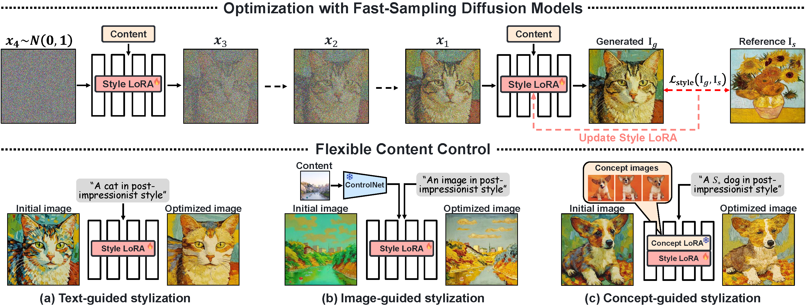
We present DeStyle, a framework that decouples style transfer from content generation. Rather than injecting style signals within the denoising pipeline, we reformulate image stylization as a post-hoc optimization problem in image space. Our framework supports flexible content specification via text prompts, content images, or learned personalized concepts.
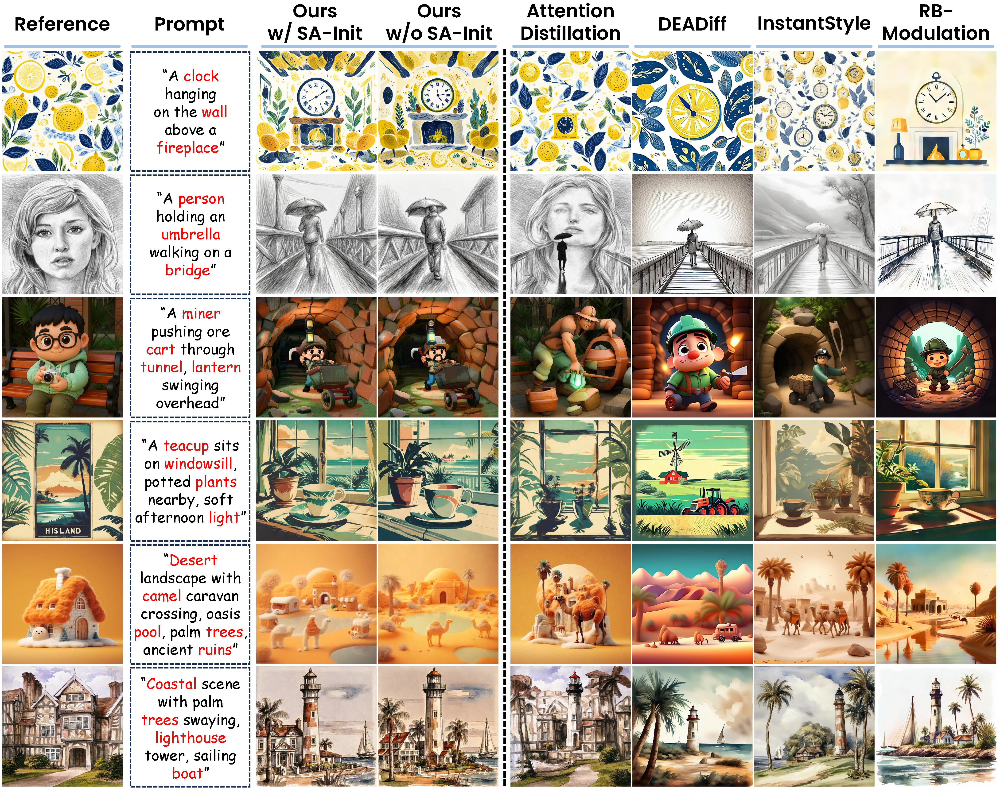
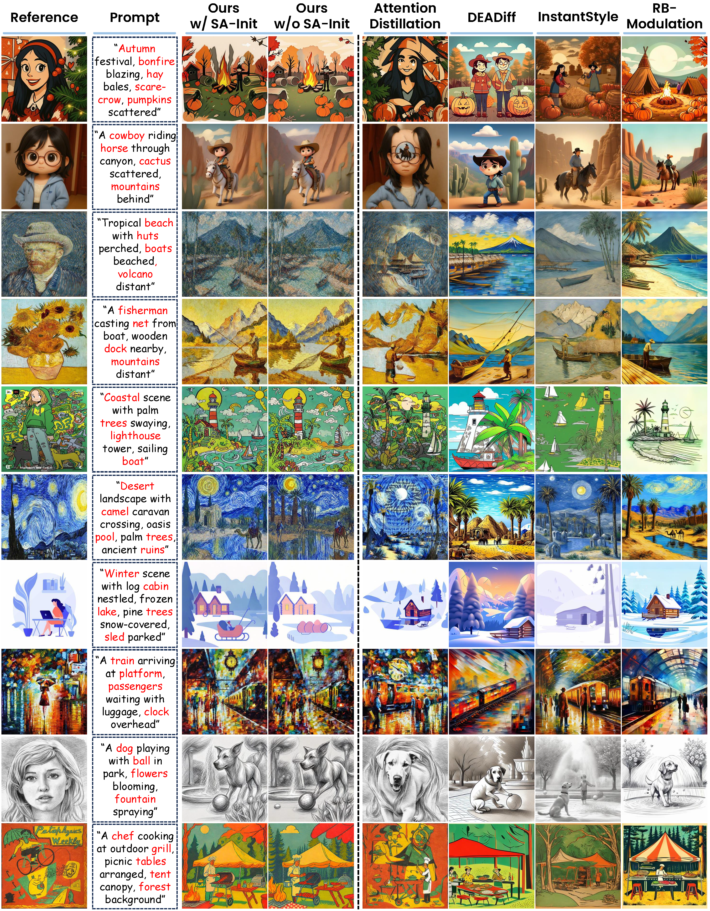
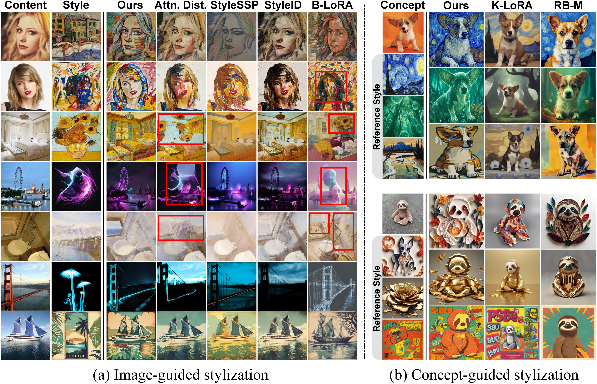
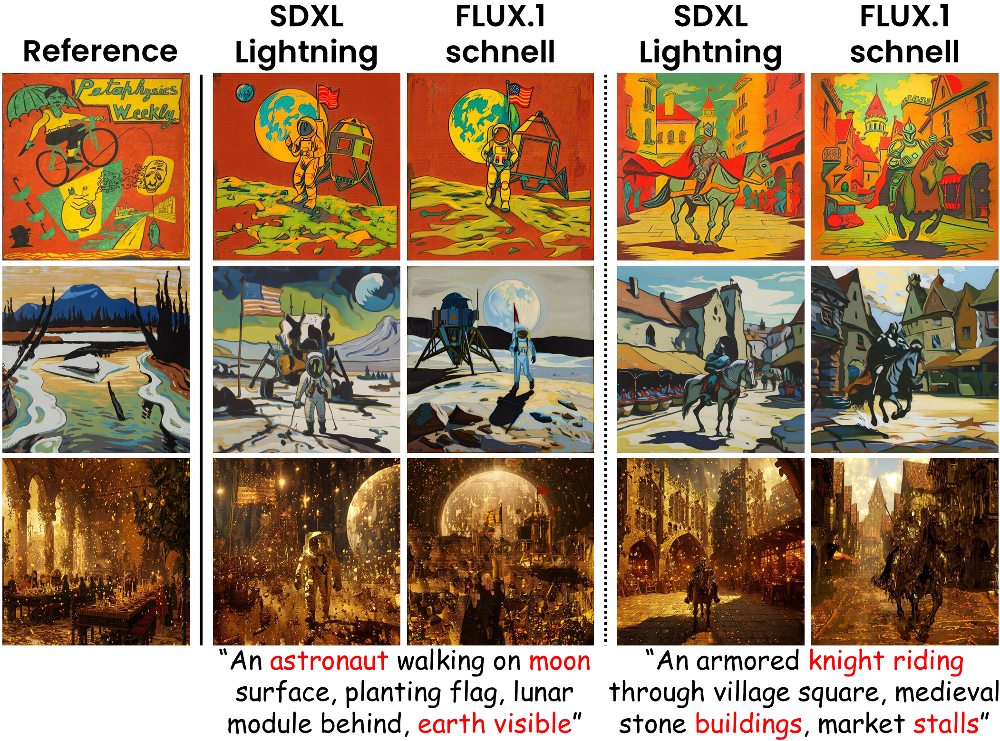
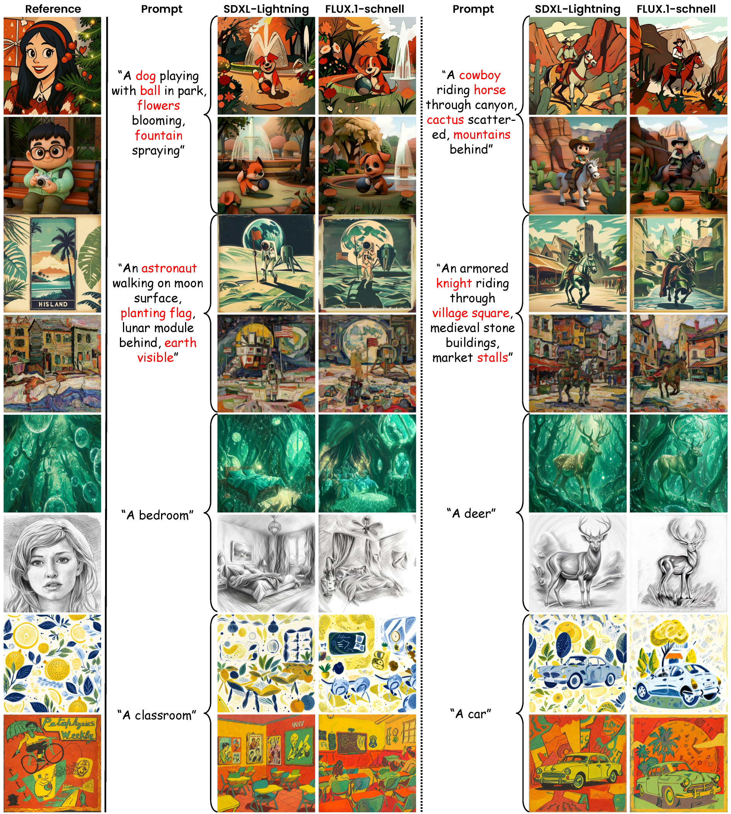
As DeStyle operates purely through image-level metric optimization, which requires no access to intermediate features, our framework is inherently architecture agnostic.
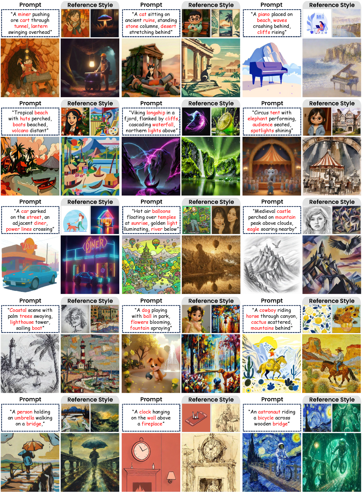
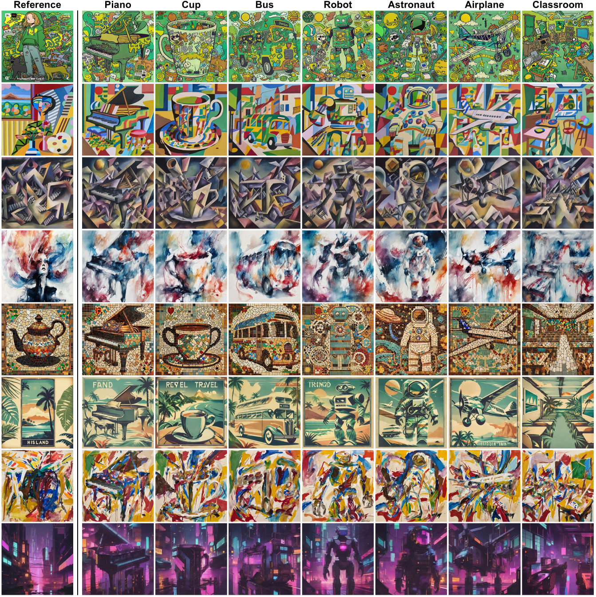
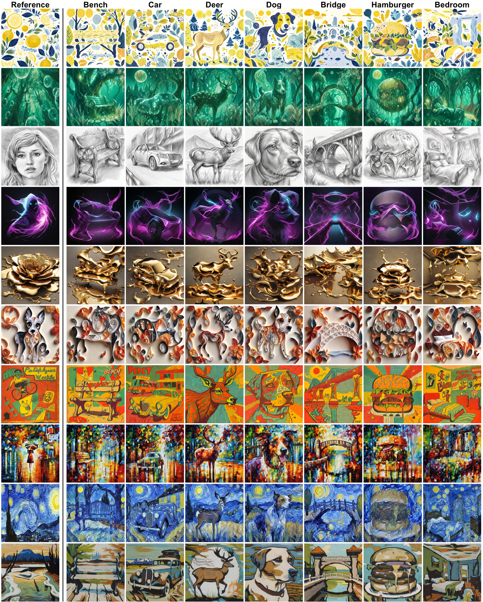
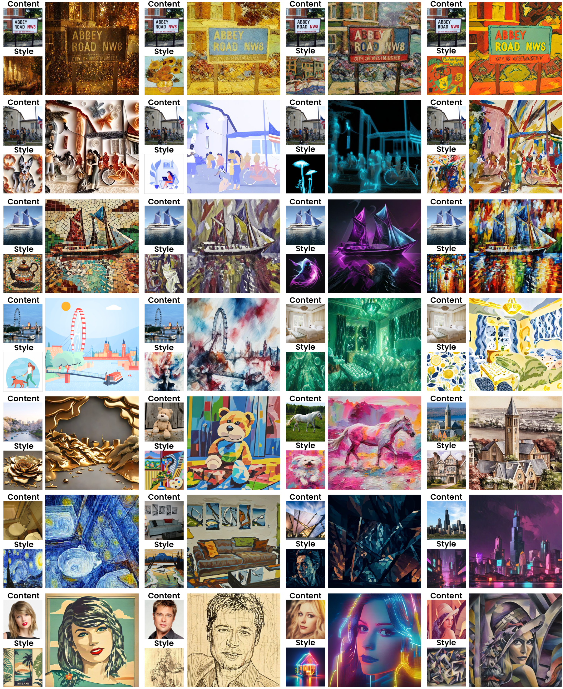
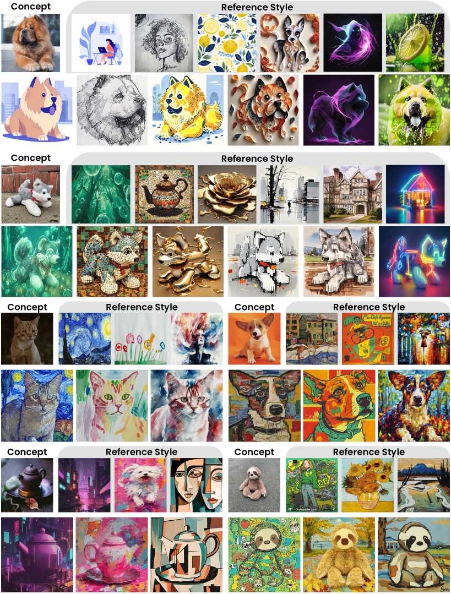